Allosaurus
Quái Dị Long kỷ Jura
Tổng quan
Kỷ
Jurassic
Họ
Allosaurinae
Chi
Allosaurus
Dài
9.7 m
Cao
4.2 m
Nặng
2.5 tấn
Thức ăn

Allosaurus là một loài khủng long chân thú thuộc phân họ Carnosauria, sống trong kỷ Jura, và các nhà cổ sinh vật học đã phát hiện ra một số lượng lớn các hóa thạch của loài này trong một mỏ đá ở Colorado. Đây là một chi khủng long được nhiều người biết đến và nổi tiếng thứ hai chỉ sau Khủng long bạo chúa T. Rex khi đã xuất hiện trong nhiều phim và tài liệu về cuộc sống tiền sử.
Nguồn: wikipedia.org
Phân bố
Khu vực Châu Phi, Châu Âu và Bắc Mỹ
Thông tin thêm về Allosaurus
Kỷ nguyên và phân bố
Allosaurus sống ở môi trường trên cạn tại nơi ngày nay là Châu Phi, Châu Âu và chủ yếu là Bắc Mỹ. Khoảng 155 đến 145 triệu năm trước, giai đoạn Kimmeridgian đến cuối Tithonia thuộc cuối kỷ Jura. Hóa thạch chi này tìm thấy nhiều ở Hệ tầng Morrison, phía Tây sông Green, Utah, trên cao nguyên Colorado và ở Texas (Mỹ). Người ta cũng tìm thấy hóa thạch chi này ở Bồ Đào Nha.
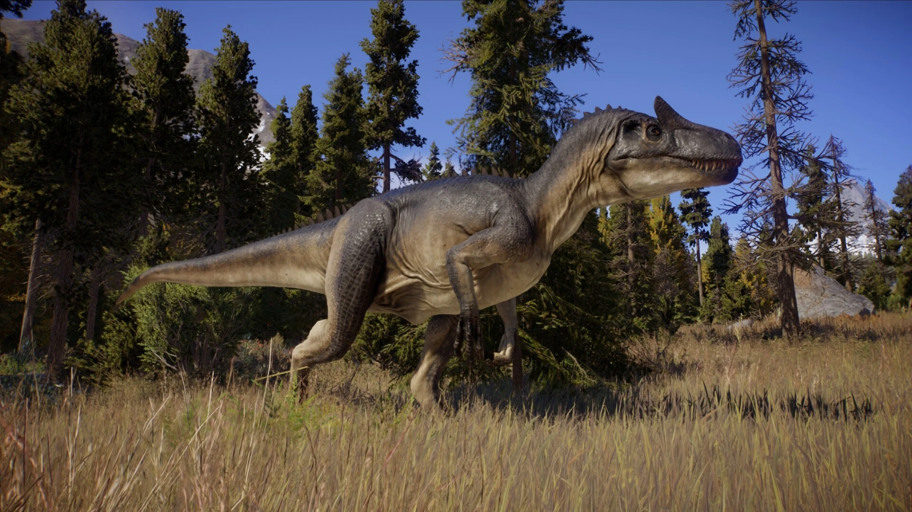Tên khoa học
Danh pháp "Allosaurus" nghĩa đen là "thằn lằn dị biệt" bởi đốt sống của loài này khá độc đáo tại thời điểm phát hiện. Cái tên này được lấy theo tiếng Hy Lạp ἄλλος (allos) ("dị biệt, khác biệt") và σαῦρος (sauros) ("thằn lằn/bò sát nói chung"). Nhà cổ sinh vật học Othniel Charles Marsh là người có công mô tả di tích hóa thạch đầu tiên được công nhận của chi này vào năm 1877.
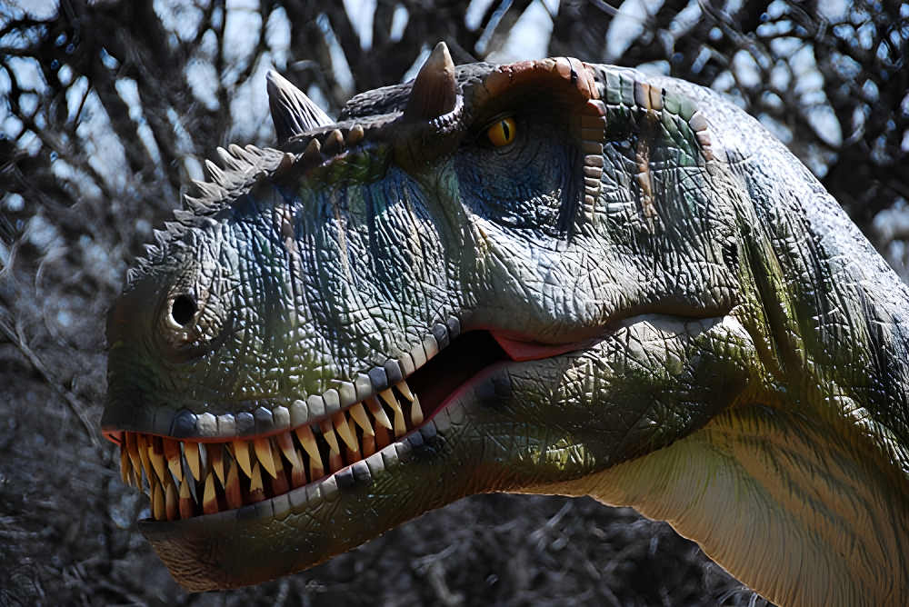Kích thước
Allosaurus là một loài khủng long chân thú lớn, con trưởng thành dài trung bình 8,5 mét thậm chí có thể dài hơn 9.7 mét, cao khoảng 4.2 mét và có thể nặng đến 2.5 tấn.
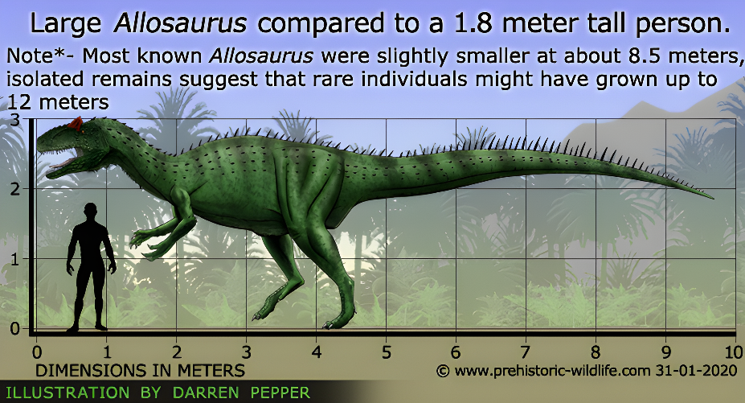Ngoại hình
Allosaurus là loài đi đứng bằng hai chân. Chi sau của chúng dài và khỏe song chi trước gồm ba ngón tay lại khá nhỏ. Chúng giữ thăng bằng nhờ phần đuôi dài và chắc hẳn rất cơ bắp. Chúng được xếp vào họ Allosauridae, một nhóm khủng long chân thú Carnosauria.
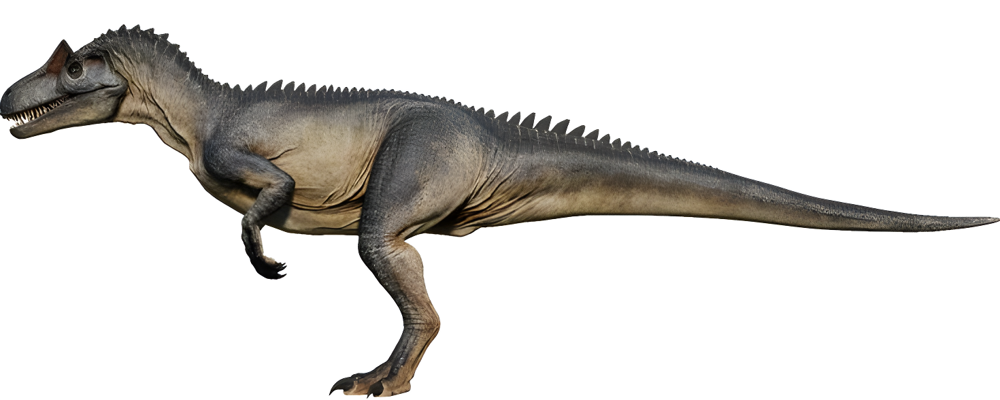Hộp sọ của chúng tuy nhẹ nhưng mạnh mẽ. Hàm của chúng trang bị hàng tá chiếc răng sắc nhọn, khi phóng to sẽ thấy có các răng cưa nhỏ men theo đường cạnh răng. Hộp sọ có một cặp sừng ở trên và trước mắt. Những chiếc sừng này là phần mở rộng của xương lệ, phong phú về kiểu hình và kích thước.
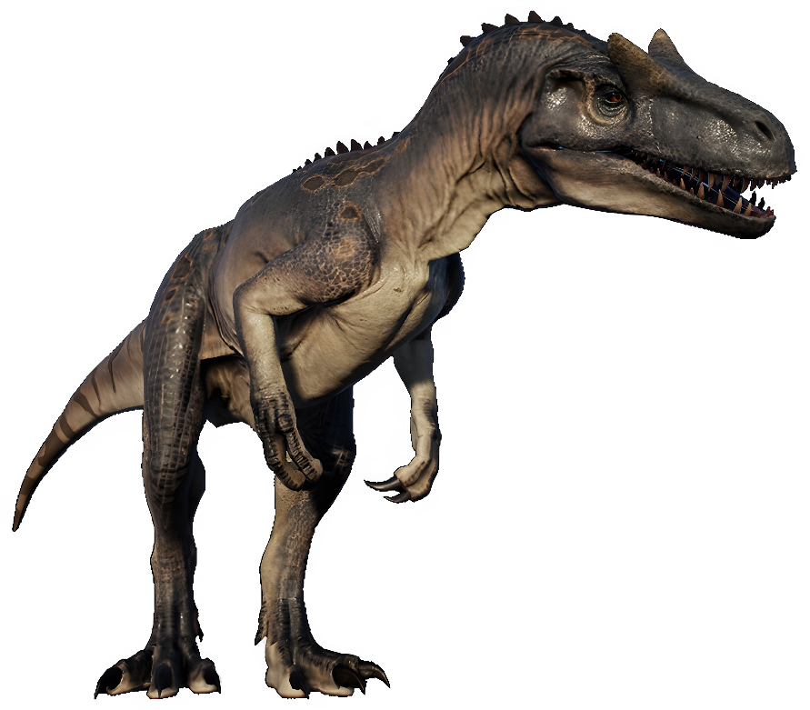Chế độ ăn và săn mồi
Allosaurus là loài săn mồi lớn nhất trong Hệ tầng Morrison, Allosaurus đứng đầu chuỗi thức ăn. Chi Quái dị long Allosaurus có thể săn bắt con mồi nhỏ hơn (hoặc có kích thước tương đương) một cách hoàn toàn độc lập hoặc có thể săn những loài khủng long khổng lồ nặng từ 25 - 50 tấn (ngay cả cá thể con non, già hoặc bệnh) là nếu chúng cùng nhau hợp tác để săn mồi. Con mồi của nó là những loài khủng long nhỏ khác như Dryosaurus và Camptosaurus hay thậm chí những loài khủng long phiến sừng (Stegosaurus và Diplodocus).
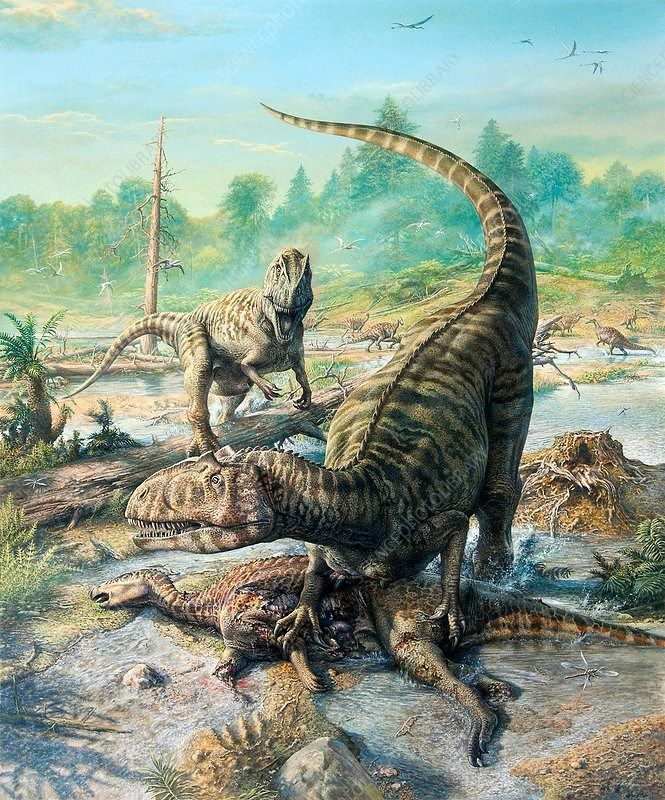Đây là loài khủng long sở hữu tốc độ nhanh và hàm răng chắc khỏe sắc bén, cong về phía sau, chúng có thể hạ cả một con khủng long to lớn bằng cách bao vây tấn công và cắn vào chỗ hiểm yếu để ngăn con mồi trốn thoát.
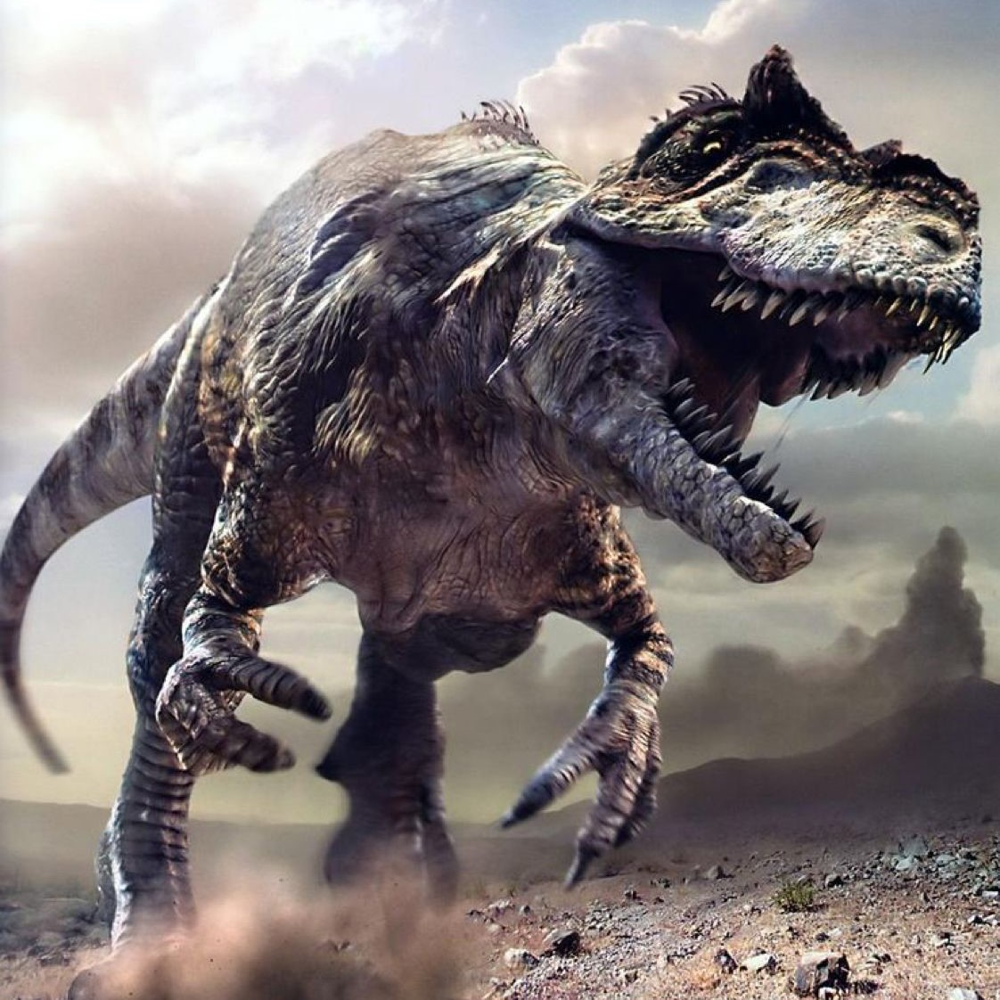Khám phá
Hóa thạch được mô tả đầu tiên trong lịch sử này là xương được Ferdinand Vandiveer Hayden khai quật được từ năm 1869 đến từ Middle Park, gần Granby, Colorado mà có lẽ từ trầm tích đá thuộc hệ tầng Morrison. Hayden đã gửi mẫu vật của mình cho Joseph Leidy - người đã xác định nó là một nửa của đốt sống đuôi và đã tạm thời gán nó cho chi Khủng long châu Âu Poekilopleuron và đặt tên là “Poicilopleuron[sic] valens”. Sau đó, ông quyết định phân loại nó là chi riêng với cái tên “Antrodemus”. Tuy nhiên, cái tên Chi Quái dị long “Allosaurus” thực sự bắt nguồn với mẫu hóa thạch đầu tiên được gán cho chi này đã được mô tả vào năm 1877 bởi nhà cổ sinh vật học Othniel Charles Marsh.
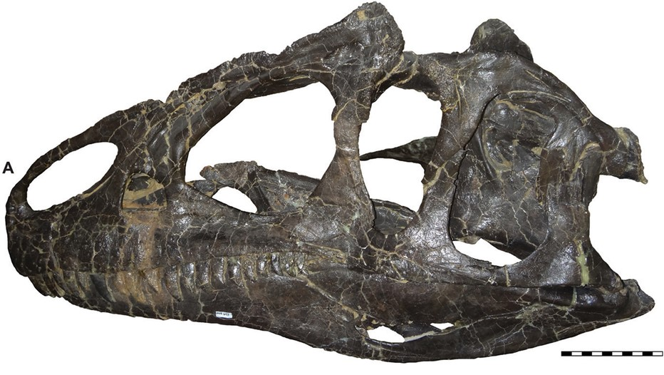Với cái tên “Allosaurus”, giới cổ sinh vật học bắt đầu một cuộc chiến có tên “Cuộc chiến xương” với sự tham gia của nhiều nhà cổ sinh vật học thế kỷ 19. Mặc dù Marsh có vinh dự đặt tên “Allosaurus” vào giữa cuộc chiến phân loại các loài khủng long chưa được xác định mà được gọi là “Cuộc chiến xương”, cả anh và đối thủ đã tiếp tục phân loại các những loài khủng long mới khác. Nhiều loài sau khi được nghiên cứu thêm thì hóa ra là loài riêng biệt nhưng vẫn thuộc Chi Quái dị long Allosaurus như loài khủng long “Antrodemus” của Hayden.
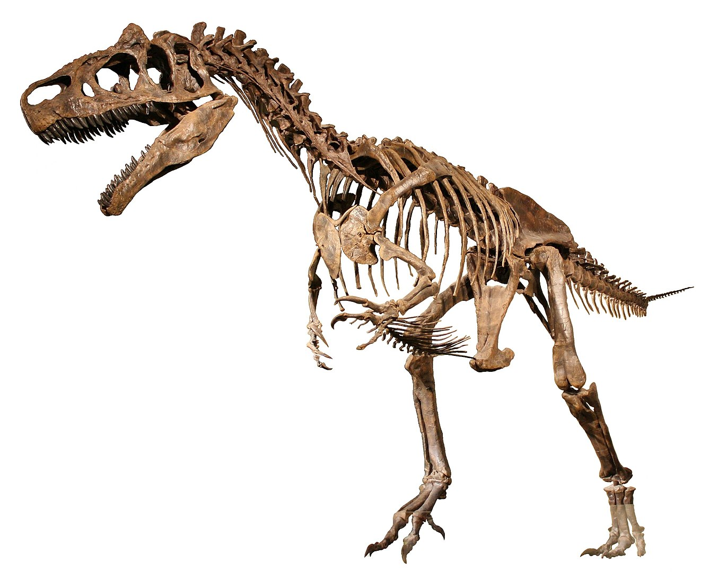Ngôi sao điện ảnh khủng long đời đầu
Bộ phim “The Lost World”, được sản xuất vào năm 1925, là bộ phim khủng long đầy đủ đầu tiên và Chi Quái dị long Allosaurus đóng vai chính chứ không phải Khủng long bạo chúa T. Rex. Tuy nhiên, chưa đầy một thập kỷ sau đó, Chi Quái dị long Allosaurus trở thành một “ngôi sao hết thời” trong các bộ phim của Hollywood trước vai khách mời thuyết phục của Khủng long bạo chúa T. Rex trong bộ phim bom tấn King Kong năm 1933. Bộ phim Jurassic Park sau này đã hoàn toàn tập trung của vào T. Rex và Velociraptor mà bỏ quên Allosaurus.
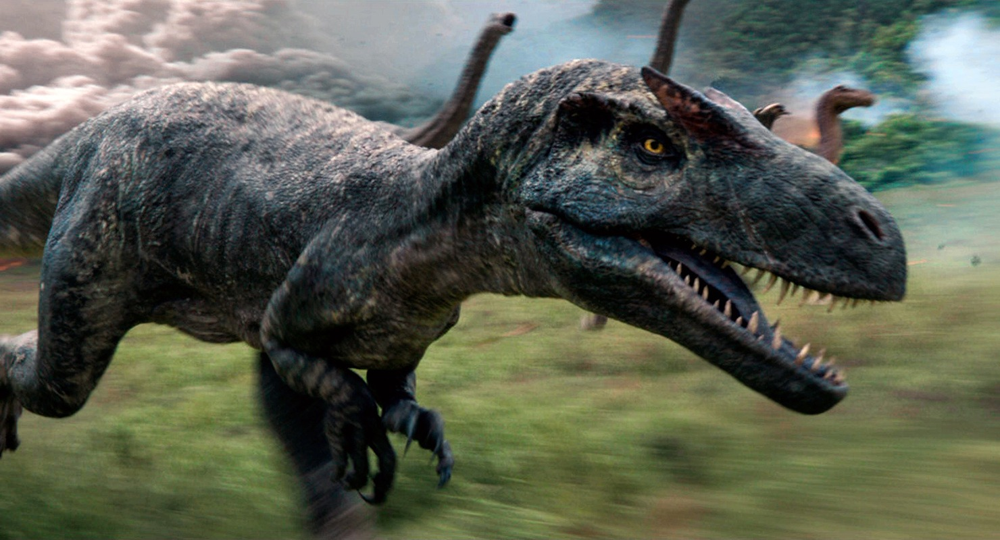Thời gian gần đây, Allosaurus đã được "nhận vai" mới trong một bộ phim Hollywood về khủng long mới có tên là "Jurassic Word (2015)", điều này khẳng định Allosaurus vẫn còn giữ vững phong độ đỉnh cao của mình như xưa.